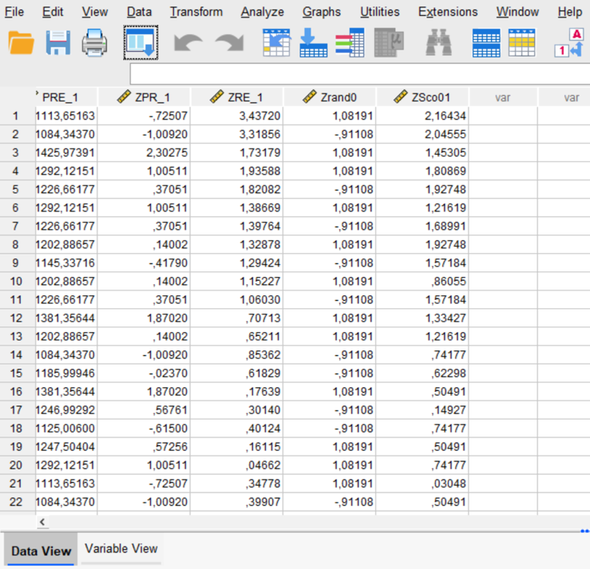
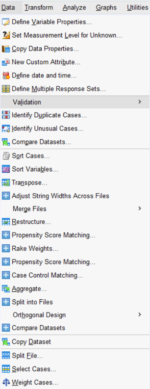
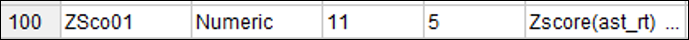
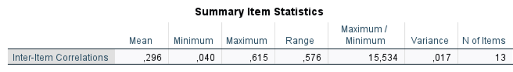
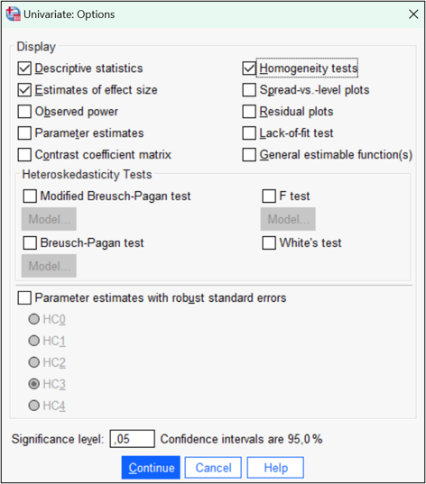
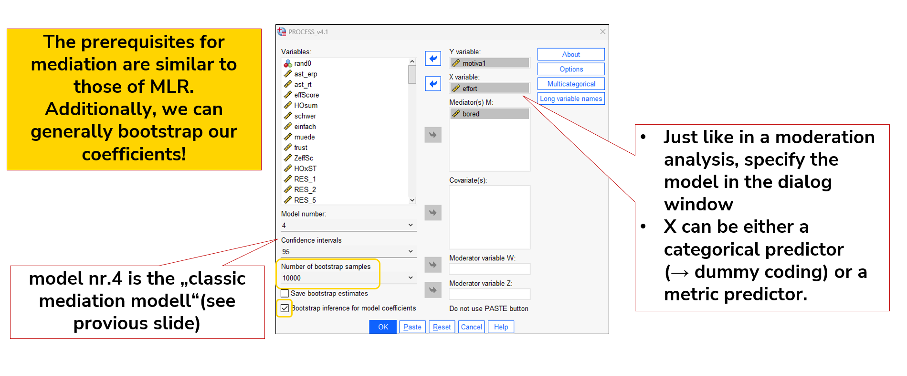

flowchart TD
subgraph s1[" "]
A["üìÅ Create folder structure"]
n3{"choose analysis tool"}
n9["üì• Download csv file from LimeSurvey
--> üíæ Save the raw file"]
n10["üì• Download R(data file) & R(syntax file) & csv file from LimeSurvey
--> üíæ Save the raw file"]
n11["üì• Download SPSS-specific export & csv file from LimeSurvey
--> üíæ Save the raw file"]
n12["üìù name all variables and label them"]
n13["üß™ Run the syntax file for the data file in R-Studio
-> labels and names the variables for you"]
n14["üíæ Save the prepared file"]
n18["üß™ Run the syntax file for the data file in SPSS
-> labels and names the variables for you"]
n19["üìù check if scales are correct"]
n20["üìù check if scales, variable names and labels are correct
-> adjust if needed"]
n21["üìù check if scales, variable names and labels are correct
-> adjust if needed"]
end
A --> n3
n3 -- jamovi --> n9
n3 -- "R-Studio" --> n10
n3 -- SPSS --> n11
n9 --> n12 --> n19 -->n14
n10 --> n13 --> n20 --> n14
n11 --> n18 --> n21 --> n14
classDef Aqua stroke:#46EDC8, fill:#DEFFF8, color:#378E7A
classDef Peach stroke:#FBB35A, fill:#FFEFDB, color:#8F632D
classDef Ash stroke:#999999, fill:#EEEEEE, color:#000000
classDef Sky stroke:#374D7C, fill:#E2EBFF, color:#374D7C
classDef Rose stroke:#FF5978, fill:#FFDFE5, color:#8E2236
class n3 Aqua
class n9 Peach
class n12 Peach
class n19 Peach
class n11 Rose
class n10 Sky
class n13 Sky
class n20 Sky
class n18 Rose
class n14 Ash
FMII-SS25 Data analysis introduction
How do I get my results?
Goal of this session
- Learn how to prepare and analyze LimeSurvey data
- Tools: SPSS, Jamovi, R-Studio, PROCESS
- Understand key steps: preparation → analyzing → reporting
üß∞ Hands-on and practical!
üí¨ Ask questions as we go!
Why Prepare Your Data?
“Garbage in, garbage out.” – Good data = good results.
- Identify missing or incorrect data
- Ensure correct variable types (nominal, ordinal, scale)
- Reproducibility
- Improved clarity
- Easier analysis
90% of the time is data preperation, 10% is data analysis
Tools for Analysis


| Tool | Strengths | Common Use Cases |
|---|---|---|
| SPSS | Robust, GUI-based, legacy support | Academic research, clinical trials, surveys |
| Jamovi | Easy UI, fast output, Open Source | Exploratory analyses, student projects |
| JASP | APA-style output, Open Source | Psychological research, Bayesian inference |
| R | Fully flexible, scriptable, Open Source | Reproducible science, data pipelines, automation |
and many, many more: Python, Julia, etc.
find Setup guides here
Access to SPSS

Use a PC at the University (e.g. PC-Room at the institut)
Buy it (you can get it very cheap for one year while you study)
Remote Desktop Access (very very slow ➜ use only in emergancy!)
Software for Students click here
SPSS GUI - Screens

SPSS data files have the extension
.savData View&Variable ViewWhen you open SPSS you are in theData View
SPSS-Syntax have the extension
.sps- programmable command language Automation, reproducibility
SPSS-Outputs have the extension
.spv- Result of the analyses & error messages
SPSS Syntax specifics

- Commands can be selected and executed individually
- Functions such as the creation/modification of variables, z-standardization/recoding of variables etc. are executed each time the syntax is run (if you run the whole syntax)!
Tip
It is best to mark the syntax command as a comment afterwards!
Use (detailed) Comments („*“ before your text) in the Syntax! There must be a period at the end of a command!
You can use AI-tools to create Syntax code ;) always use the PASTE function ➜ and save your syntax!
SPSS tips

ALWAYS use the “PASTE” command instead of “OK” to document each step in the syntax.
- you can edit and/or copy any command in the syntax
- easy reproducable analysis
Use the “OK” button instead of “PASTE”, only if you are working with the PROCESS macro
Prerequisites for data analysis
Data Import Ô∏èüì•
üóÇÔ∏è Creating a suitable folder structure
get raw data and save it propperly
üìÇ Correct opening of the data set
✅ Verification of scales and labels
üè∑Ô∏è Meaningful naming of the variables
Data Preperation üõ†
Create new Variables
Recode existing Variables
Define relevant variables
filter relevant cases
Good practice
Save raw data twice and preferably once externally (backup copy)
Create a separate “data work file” (if something is accidentally deleted, the original raw data is still available!)
In Excel or similar: document the number of excluded cases for each step Incompletedata records, extreme values (filter), occasional missing values
Always create new variables (do not replace originals!)
Choose a clear and simple description of your data/syntax add missing labels for every Variable!!!
Select unique, simple and meaningfull variable names
Data Import flowchart
Quick Overview in Scales
- Nominal: Categories with no order.
- Ordinal: Categories with a defined order.
- Interval: Equal distances but no true zero.
- Ratio: Equal distances and a true zero.
Properly understanding the type of data scale helps with choosing the right statistical methods.
The right scaling
Nominal Scale
- Categories with no order.
- Examples: Gender, Country, Eye Color.
Ordinal Scale
- Categories with a defined order.
- Differences between categories are not uniform.
- Examples: Ranking (1st, 2nd, 3rd), Likert scale (Agree, Neutral, Disagree).
Interval Scale
- Ordered data with equal intervals, but no absolute zero.
- Examples: Temperature (Celsius, Fahrenheit), IQ Scores.
Ratio Scale
- Ordered data with equal intervals and an absolute zero.
- Examples: Height, Weight, Age, Income.
Assigning Scales in your Software
every variable is automatically assigned to a scale which the software think is fitting based on the values of the variable
certain analysis need variables with certain scales
- manually rescale needed varibales
Creating new Variables
Is needed for e.g.:
- total scores (questionnaires)
- Means (questionnaires, reaction times)
- difference value (reaction times)
In the case of (e.g.) sum scores from a large number of variables, it is not necessary to enumerate all variables individually. The “to” command is used for this:
Instead:
In this case, however, the variables var1 to varN must follow each other directly in the variable view!
Recoding existing variabels
- remember to ALWAYS create new variables, never change existing ones
Is needed for e.g.:
- Simplification of categorys
- Inversion of scales
- Creation of dummy variables
- Error corrections
- Mediansplit
The rules for recoding can also be entered via the graphical user interface instead of the syntax! Click on Change to add the newly defined variable as an output variable
Descriptive statistics
Characteristic values for describing data
- Composition of the sample
- “Basic information” about the variables used
- (Verification of assumptions)
Important to understand your own data!!!
Different possibilities:
- (cumulative) absolute/relative frequencies
- Measures of central tendency (modal value, median, mean value)
- Dispersion measures (variance, standard deviation)
- Graphical forms of presentation
- Correlation
Descriptive statistics SPSS - Frequencies
Note
Depending on the variable (scale level, number of gradations, …), decide whether more or fewer measures make sense
Exemplary syntax command
Descriptive statistics SPSS - Descriptives + z-scores
Exemplary syntax command
Compared to “Frequencies”:
- Same information (but fewer selection options) with a different arrangement
z-standardized variables appear in the data set and can be used for analyses

z-Standardization
Standardization is usually used to compare variables with different units by transforming the measured values so that they have a given mean and variance
In z-standardization, the mean value of the variable \(\bar{x}\) is subtracted from each measured value \(x_i\) and the resulting difference is divided by the standard deviation \(s_{emp}\) :
\[ z_i = \frac{x_i - \bar{x}}{s_{\text{emp}}} \]
- If this is carried out for all measured values of a variable, the result for the z-standardized measured values is a mean value of 0 and a standard deviation of 1
Note
z-standardization does not change the direction of the deviations of the individual measured values from the respective mean value!
- Interpretation: A z-value indicates by how many standard deviations a value deviates from the mean value
Outliers in the data
- Are noticeably higher/lower than the majority of values and do not appear to fit with the remaining data points.
- Often have a disproportionate influence on statistical analyses ➜ leading to skewed results.
Identification
- Visual: Scatterplots, Boxplots
- Statistical: z-values & 1.5 × IQR-rule
How to handle outliers
- Consider possible causes of extreme values. (real values vs. Data entry errors)
- Set a threshold: Exclude certain values. (e.g. ±2.5/3 SD assuming a normal distribution)
- Data transformation (Logarithmize) to reduce the influence
- Robust Methods (Median insted of Mittelwert, IQA instead of SD, robust Regression/Estimations, non-parametric Tests)
- (Bootstrapping)
The approach should always be well thought out, logically justified, and documented. Comparing the results with outliers and without outliers can also be insightful!
Filter data in SPSS
- Reduction of the dataset to relevant cases for analysis (e.g., exclusion of outliers)
- Targeted analysis of subgroups
- SPSS creates a corresponding filter variable in the dataset!
It is possible to implement multiple Filters at once
- Important at the end: “Turn off” the filter.
- Either through the graphical user interface or via syntax.
- Otherwise, the filter remains active, which can lead to errors in further analyses

Exemplary syntax command (easy)
Exemplary syntax command (more complex ➜ via „PASTE“ ) ➜ Enhances the documentation and user-friendliness of the syntax code!
USE ALL.
COMPUTE filter_$=(lastpage = 17 & alter >= 18 ).
VARIABLE LABELS filter_$ 'lastpage = 17 & alter >= 18 (FILTER)'.
VALUE LABELS filter_$ 0 'Not Selected' 1 'Selected'.
FORMATS filter_$ (f1.0).
FILTER BY filter_$.
EXECUTE.
Syntax command to deactivate Filters:
Filtering Outliers
- Only individuals whose average reaction time deviates by a maximum of 2.5 standard deviations from the overall sample’s average reaction time should be analyzed.
- Standardize the variable with the average reaction time using the z-score (via „Descriptives“, see slide „Descriptive Statistics – Descriptives“)
- Define a filter so that individuals with values < -2.5 and > 2.5 in the newly z-standardized variable are excluded.

Check for normal distribution
Theoretically, there are three possibilities:
- Inferential statistical testing: Kolmogorov-Smirnov test or Shapiro-Wilk test
- Descriptive statistical testing: Using skewness and kurtosis
- Graphical testing: For example, using a histogram or Q-Q plot
➜ via „Explorative data analysis“
Note
In some areas, skewness and kurtosis are preferred for assessing the normality of a variable (due to the disadvantages of inferential statistical methods). However, inferential statistical methods can generally still be used.
References to check:
- Mishra, P., Pandey, C. M., Singh, U., Gupta, A., Sahu, C., & Keshri, A. (2019). Descriptive statistics and normality tests for statistical data. Annals of cardiac anaesthesia, 22(1), 67–72. https://doi.org/10.4103/aca.ACA_157_18
- Kim H. Y. (2013). Statistical notes for clinical researchers: assessing normal distribution (2) using skewness and kurtosis. Restorative dentistry & endodontics, 38(1), 52–54. https://doi.org/10.5395/rde.2013.38.1.52
Check for normal distribution SPSS
Testing for normality using skewness and kurtosis
- If both are less than 1 in absolute value, we can assume the variable is normally distributed
- If the skewness is less than 1 in absolute value and the kurtosis is less than 5 in absolute value, we can still assume an acceptable fit
Histogram
Boxplot
The exploratory data analysis additionally provides boxplots, where potential outliers are directly marked (see slides on boxplots). However, the decision on what to do with outliers should again depend on substantive considerations and the expected impact of the outliers on the planned analysis. There is also the option to output extreme values of the variable, which can help gain a better understanding of the data
Q-Q Plot
In a “perfect” normal distribution, all data points in both graphs would lie on the black line.
Q-Q plots provide a graphical illustration that can help better understand the data (especially the left plot). However, they should not be used as the sole criterion for deciding whether a variable is normally distributed.
Both the Kolmogorov-Smirnov test and the Shapiro-Wilk-test test the null hypothesis that the measurements of the respective variable are normally distributed
A significant result indicates that the data are not normally distributed
Problem with these tests:
- Too high power in very large samples → significant results even for very small and practically insignificant deviations from “perfect normality“
- Too low power in small samples → “problematic” deviations from normality are not detected, leading to no significant result
No normal distribution?
What to do if one or more variables to be analyzed are not normally distributed?
- Transform the data (e.g., logarithmize)
- Use the resampling method of bootstrapping
- Argue using the central limit theorem
- (Use non-parametric methods)
Be transparent and report it!
Reliability Analysis
To assess the reliability (measurement accuracy, dependability, stability) of tests and measurements
Reliability values can be considered as the proportion of the true variance to the total variance of the test.
Cronbachs Alpha (α)
Dependent on:
- number of items
- variance of the items
- variance of the test scores
- Covariance/intercorrelation of the items
α = Sample-dependent | the more items the higher α
It is a generalization of the split-half method (where each item is considered as an independent test part)
A high α Is desirable for homogeneous constructs/tests
.7 (Heterogeneous constructs, personality tests)
.8 - .9 (Homogeneous constructs)
over .9 (Performance tests)
CAUTION: The frequently cited Kuder-Richardson formula (KR20) for dichotomous items is not explicitly provided in SPSS, but an adequate approximation can be calculated using Cronbach’s alpha.
Alternative: McDonalds Omega (ω)
Less strict assumptions (identical unstandardized loadings and error variances; essential τ-equivalence)
Recommended when the items correlate with the latent construct to varying degrees. Integrated since version 27 in SPSS! ➜ you can use it :)
Reliability Analysis

Exemplary syntax command
Items of a scale are dragged into the right field (be careful with reverse-coded items → use them accordingly!)
Click on the framed statistics
Copy the command into the syntax and execute it

Cronbachs Alpha Based on Standardized items uses correlations instead of covariances. This can be used, for example, when the items of a test are measured in different units.
Inter-Item Correlations
The mean of the correlations between all item pairs within the measurement instrument. Very high inter-item correlations may indicate redundant items. .15 - .50 is acceptable
Corrected Item-Total Correlation
= Discriminative power (correlation of an item with the scale, excluding the respective item) Items of a scale should be able – when there is a high reliability – to distinguish between individuals with low and high levels of the trait ➜ requires discriminative items. >.25 is acceptable; .40 - .70 is good
Cronbachs alpha if Item deletet
= Improvement/deterioration of Cronbach’s α by removing the respective item from the scale. In the present case, removing individual items would not lead to an improvement in α.
t-test concept
checks whether the means of two groups differ significantly from each other or whether a mean differs significantly from a given value
One-sample t-test
- Does the mean of a sample differ significantly from a known or hypothetical population mean?
Two-sample t-test for independent samples
- Does the difference in means between two independent samples significantly deviate from a known or hypothetical population value?
- “The special case is the normal case”: Do two populations differ in their mean?
Two-sample t-test for dependent samples
- As with the two-sample t-test for independent samples, we are interested in the parameter differences here, but from dependent samples.
Tip
In all cases, the t-value quantifies how far the observed mean/the observed difference is from the expected value (under the null hypothesis) (numerator), measured in units of the standard error (denominator).
\[
t = \frac{\bar{x} - \mu_0}{\sqrt{\frac{s^2}{n}}}
\]
\[
t = \frac{(\bar{x}_1 - \bar{x}_2) - \mu_0}{\sqrt{\frac{s^2_{\text{pool}}}{n_1} + \frac{s^2_{\text{pool}}}{n_2}}}
\]
\[
t = \frac{(\bar{x}_1 - \bar{x}_2) - \mu_0}{\sqrt{\frac{s^2_{\text{diff}}}{n}}}
\]
t-test Assumptions
Interval-scaled dependent variable
Normal distributed dependent variable (Check: see slides „Check for normal distribution“)
For two-sample t-test for independent samples: Homogeneity of variance
- = Assumption that the variance of the dependent variable is equal across all groups of the factor
- Checked using Levene’s test (H0: estimated population variances are equal)
- For a non-significant result, the values under “Equal variances assumed” are used for the t-test
- For a significant result, the values under “Equal variances not assumed” are used for the t-test
In principle, t-tests are quite robust to violations of assumptions (meaning they still provide stable results even when assumptions are violated).
t-test in SPSS
independent t-test
dependent t-test
Note
We define which variables are considered as dependent measurements or measurement pairs.
Here: Motivation at t1 and at t2.
Exemplary syntax command
Items of a scale are dragged into the right field (be careful with reverse-coded items → use them accordingly!)
Click on the framed statistics
Copy the command into the syntax and execute it
Levene’s test to check the assumption of homogeneity of variance
In the context of a t-test for dependent samples, the assumption of homogeneity of variance does not need to be checked. However, interval scaling and normality should still be assessed.
ANOVA Assumptions
ANOVA - Effect Sizes \(\hat{\eta}^2 \, \, \hat{\eta}^2_p\)
→ Both are measures of effect size within the context of analysis of variance
η2 : Proportion of the total variance explained by the factor
- How much of the variance in the dependent variable can be attributed to the individual factor?
- Contra: Comparison of effect size with other analyses is not possible, as the effect size depends on which other effects are being tested in the analysis.
η2p: All components except the variance of interest and the error variance are removed from the total variance (in the denominator)
- What is the proportion of the dependent variable’s variance attributed to the individual factor and the error that can be explained by each respective factor?
- Pro: Comparable across different studies (small)
- Contra: Partial effect size measures within a study cannot be summed to a total effect → Representation of the relationships between the effects within the analysis is not possible
\(\hat{\eta}^2 = \frac{QS_{\text{Factor}}}{QS_{\text{Total}}}\)
\(\hat{\eta}^2_p = \frac{QS_{\text{Factor}}}{QS_{\text{Factor}} + QS_{\text{Error}}}\)
One-Way ANOVA without repeated measurements SPSS
Before we start with the analysis we should check if our Assumptions are met!
This ANOVA is used to examine differences in a variable across more than 2 (independent) groups

Also referred to as “estimated marginal means” or “least squares means“
These estimated means represent a form of “standardized means”
Important for interpreting the effects of categorical predictors within the model, especially when the sample sizes between the groups vary or when the model includes covariates
Always select for interactions and when an independent variable has more than 2 levels!
Caution: Post-Hoc-Tests under Post Hoc... are generally only possible for between-subjects factors. For multifactorial ANOVAs, it is best to conduct these through “EM Means”
USE BONFERRONI
Exemplary syntax command
ANOVA reporting results
Relevant descriptive statistics (either mentioned in the text or referenced in an APA-compliant table)
- Factor + levels
- N, M, SD of the groups
- Estimated population means and standard errors for (used) pairwise comparisons
F-/Omnibus test:
- F(df_UV, df_Error) = F-value, p = p-value, \(\eta_p^2\) = value
Mean difference, standard error, and p-value for all pairwise comparisons
- Significant pairwise comparisons should be discussed in the text. Non-significant pairwise comparisons can be presented in an APA-compliant table, with a reference to the table in the text
In the case of a significant Mauchly’s Test of Sphericity in a one-way ANOVA with a within-subjects factor, the correction method used (e.g., Greenhouse-Geisser) must also be reported.
Always prioritize the substantive conclusion, with statistical values serving only to support the statement!
- Don‘t: “The three groups differ significantly from each other.“
Example Report
„A one-way repeated measures ANOVA was conducted with the repeated measures factor [Factor Name]. The descriptive statistics can be found in Table 1. The results indicated that students from the fields of psychology, history, and business administration significantly differed in perceived exam anxiety (report F-test correctly). Pairwise comparisons further revealed that psychology students had significantly higher levels of exam anxiety than business administration students (report pairwise comparison). No significant differences were found otherwise (see Table X; reference to table with non-significant pairwise comparisons)”
PROCESS Macro
installation
use for moderation- & mediation analysis
PROCESS installation
PROCESS is a macro for SPSS developed by Andrew F. Hayes specifically designed for the analysis of mediated, moderated and conditional process models.
It simplifies the application of regression analyses, especially for more complex models that examine interaction effects or indirect mediation effects.
Integration in SPSS
“Backup download link” should automatically download the desired .zip folder.
Alternatively, you can take the detour via the website of the Canadian Centre for Research Analysis and Methods (step 2)Unzip the .zip-folder & start „process.sps“-(Syntax-) file
In the open SPSS-Syntax:
Extensions ➜ Utilities ➜ Install custom Dialog (Compatibility Mode)Select the folder, in witch the file „process.spd“ is safed + open it
You can select the macro under
Analyze ➜ Regression
Moderation concept
Interpretation of (unstandardized) regression-weights if a moderation effect exists
Moderation analysis with Process
PROCESS - Output

PROCESS Limitations
In this example, a dichotomous IV and a metric moderator variable (and their interaction term) were included in the regression model.
- If you use a dichotomous moderator, there is no need to output the Johnson & Neyman significance regions
- The use of a categorical variable (as IV or moderator ➜ dummy coding) is not explicitly considered here. Instructions can be found on the Internet.
PROCESS CANNOT be used to Therefore, the interaction term IV * moderator must first be created in SPSS in the form of a new variable
Transform ➜ Compute variableThis variable is then entered into the regression together with IV and moderator in the regression
Interpretation of Moderation Analysis
Estimation and interpretation of the parameters of centered predictors
Example – simple Moderation
Mediation concept
Mediation PROCESS

Mediation - presenting results
No general standards available
Recomendations: Graphical representation + reporting results in the text or APA-table for MLR Path coefficients (a, b, a*b, c‘) ➜ (un)standardized, SE, bootstrapping confidence interval
Effect size: Dichotomous predictor → partially standardized effect (unstd. ab / SDY) Continuous predictor → fully standardized effect (unstd. ab / SDY / SDX )
Further guidelines for result presentation can be found online e.g. http://www.regorz-statistik.de/inhalte.
Mediation with categorical predictors
A detailed description can be found, for example, in A. Field (2018). Please feel free to reach out by email if you have any questions regarding your analysis!
Key points to remember: A categorical variable is dummy-coded One group serves as the reference/baseline for all other groups → 0-coding
Video-tutorial: https://www.youtube.com/watch?v=r2_zw4G55X0
Access to jamovi
Use jamovi Cloud
Download jamovi here
- choose right installation (e.g. Windows, Mac, linux)
- download and install
help with jamovi forum
Access to JASP

Use JASP online
Download JASP here
- choose right installation (e.g. Windows, Mac, linux)
- download and install
help with JASP forum
Access to R-Studio
You need to install R first and the R-Studio!
-
- choose right installation (e.g. Windows, Mac, linux)
- download and install
- setup ➜ and only use R-Studio ➜ never R
help with R-Studio forum
Reporting Your Results
- Follow APA guidelines
- Report:
- Test type
- Test statistic (e.g., t, F, r)
- p-values and effect sizes
- Graphs when useful (everything has to be somewhere ONCE)
- use the sheet online
✅ Example: > “A significant pearson correlation was found between X and Y, r = .45, p < .001”
Resources & Support
- Saiko Psychology R Guide
- SPSS video tutorials
- discovR
- Quarto tutorials
- R-Studio tutorials
- Ask your instructor or TA
- AI Tools (e.g. Mistral, Claude)
ü߆ Practice = confidence!
Let’s Practice!
- Open your Data in SPSS
- Identify variable types
- Run a descriptive analysis
- Calculate Cronbach’s alpha
- Try a correlation or t-test
üí¨ Ask questions as we go!